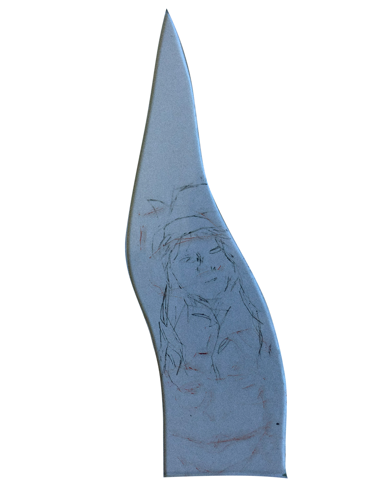
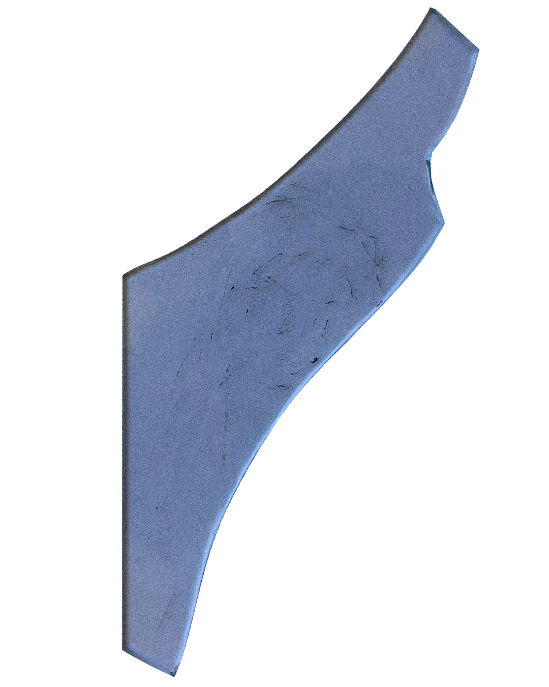
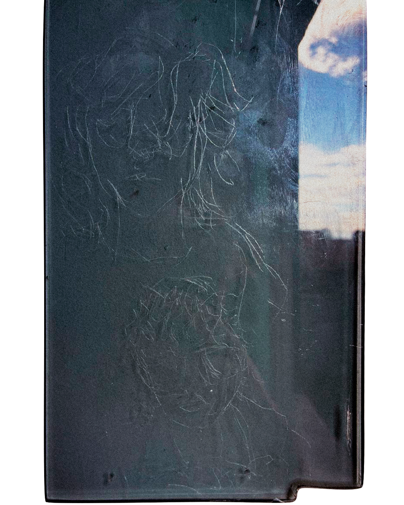
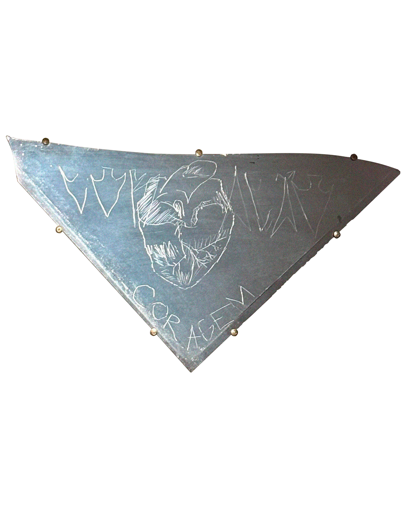
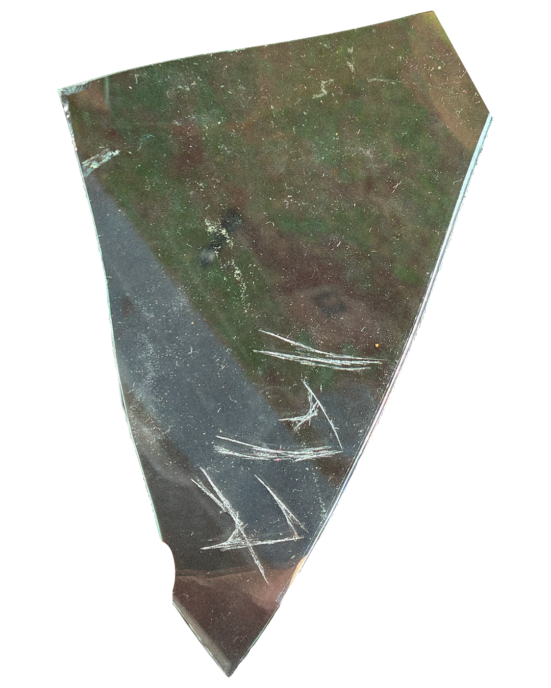
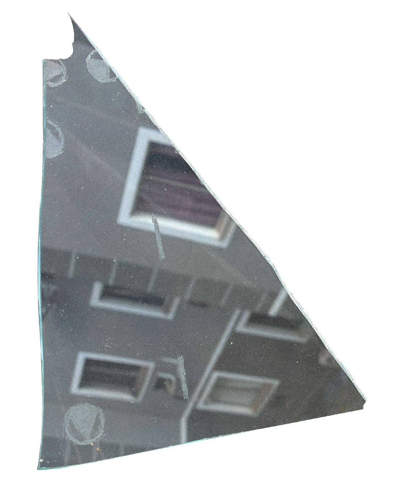
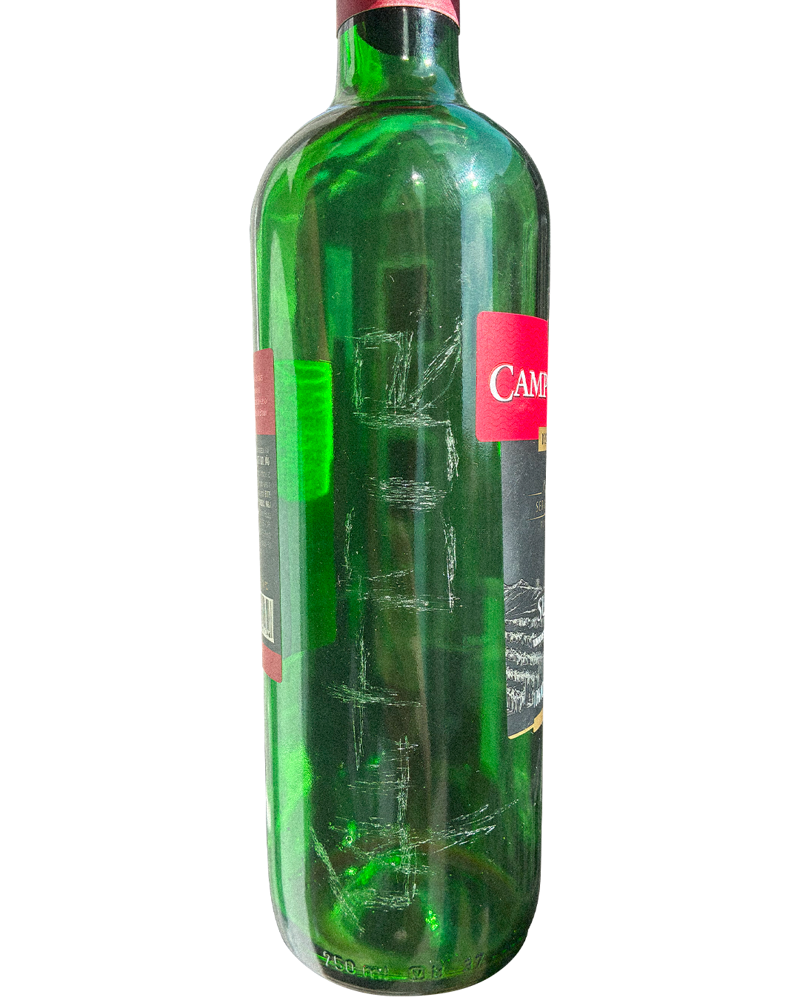
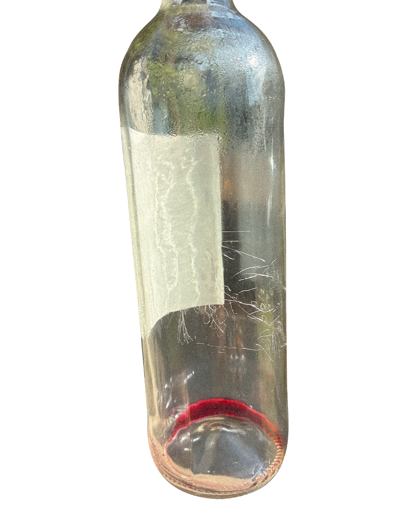
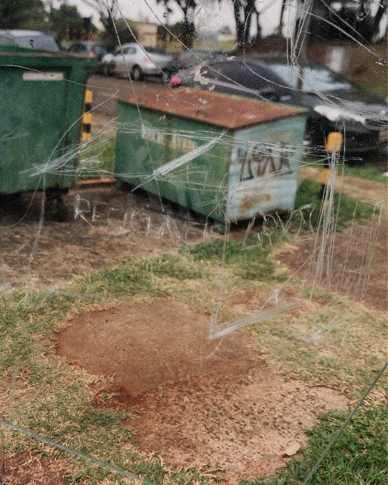

guarda-chuva preto
“quando o exército turco começou a utilizar drones durante a década de 2010 e causou um elevado número de baixas entre os guerrilheiros [curdos], algumas unidades autônomas descobriram acidentalmente que acobertarem-se sob guarda-chuvas pretos as protegiam de serem detectados” (üstündag, 2019).
o povo curdo, que há algumas décadas vem lutando pela garantia de cada vez mais autonomia no seu modo de existir e produzir a vida, sofre constantemente ataques dos países que cercam o seu território (iraque, irã, síria e turquia) e em meio à esses ataques descobrem, inventam e reinventam práticas de autodefesa e ação direta para auxiliar em sua luta.
a série intitulada de “guarda-chuva preto” é gerada nesta perspectiva. em meio à uma série de ações de guerrilha praticadas no cotidiano da artista, na qual ela se preocupava em agir e em aprimorar cada vez mais as suas ações, ela se viu em uma urgência de aprimorar em silêncio. desta forma, ela seguiu produzindo seus desenhos em superfícies alternativas com ferramentas alternativas.
no caso do povo curdo, “esse conhecimento [dos guarda-chuvas pretos] se espalhou muito rapidamente entre as unidades e tornou-se uma estratégia comum até que o exército descobriu seu truque.” (ibid.), ou seja, mesmo que tenha sido revelado as práticas de camuflagem (camuflagem também pode ser entendida enquanto táticas de autodefesa), o conhecimento se espalhou, o povo curdo viu uma necessidade de socializar seu conhecimento e suas táticas de guerrilha.
é disso que as obras da artista nessa série se alimentam: apoio mútuo, solidariedade e poder transitar mesmo com ações protoclandestinas.
atravessar multidões passando despercebida por qualquer entidade repressora, seja por polícia ou por herói, é uma habilidade que guerrilheiros urbanos devem aprender.
mídia

'fantasia n01' (2025)

'fantasia n02' (2025)

'a foto, o manco e o mestre' (2025)

'coração-coragem' (2026)

'cloreto de ódio' (2025)

'mapeamento de guerrilha' (2025)

'campo largo n01' (2025)

'don nogueira n01' (2026)

'recicláveis' (2025)